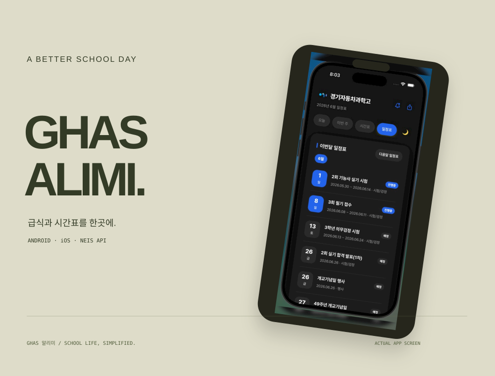
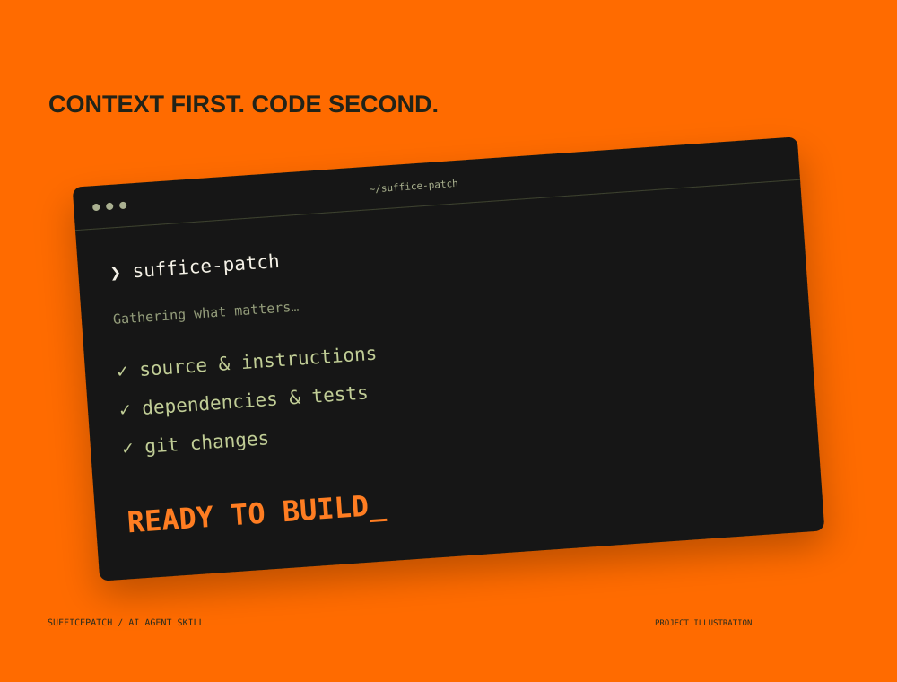
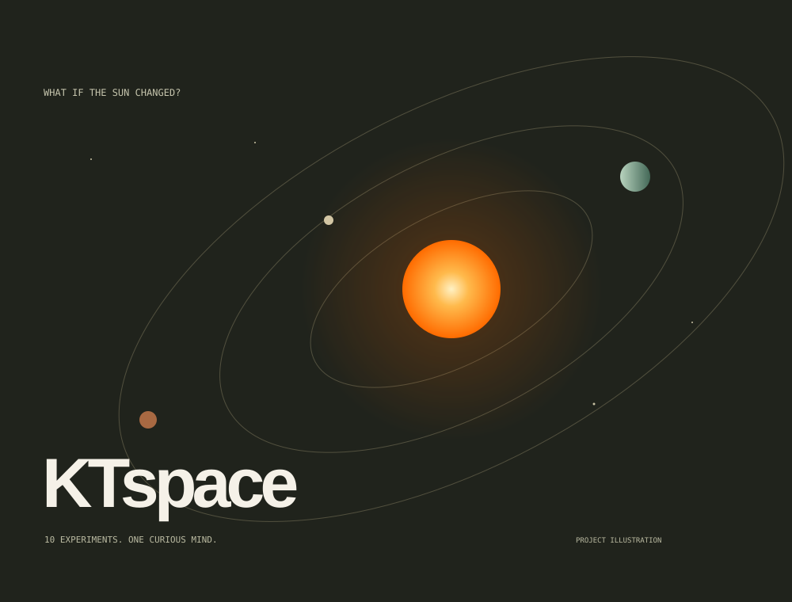
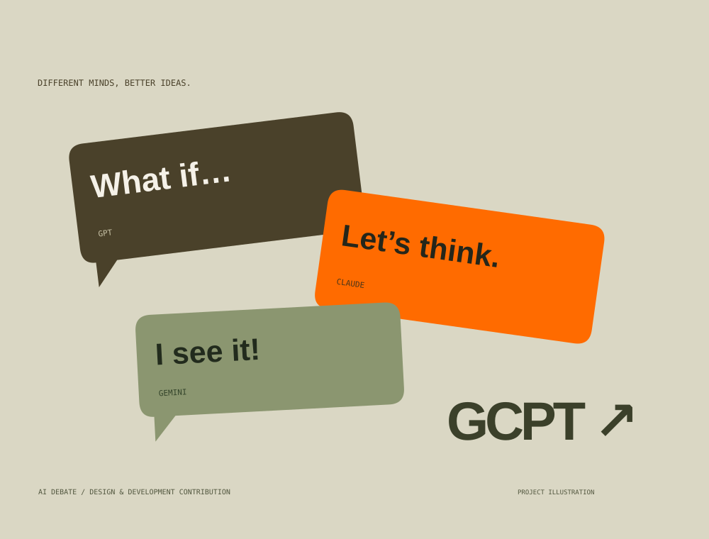
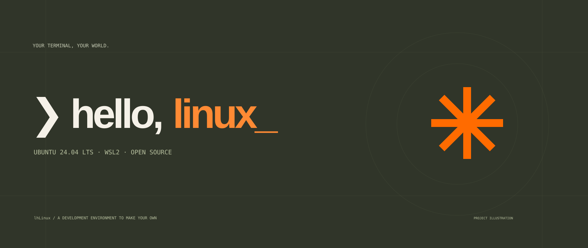

언어
Python · JavaScript · TypeScript · Java
A LITTLE CURIOSITY. A BIG IMPACT.
Programmer · Builder · Hacker
만들고, 부수고, 다시 배우며 성장하는 김진형입니다.
웹, AI, 로봇, 보안의 가능성을 직접 프로젝트로 만듭니다.
안녕하세요, 김진형입니다.
궁금한 것은 직접 만들어 봅니다.
안녕하세요. 만들고, 부수고, 다시 배우며 성장하는 김진형입니다. 웹부터 AI, 로봇, 보안까지 궁금한 것을 직접 프로젝트로 만들어 봅니다.
경기자동차과학고등학교 3학년 · 미래자동차과. 소프트웨어 엔지니어 / AI 엔지니어를 목표로 공부하고 있습니다.
The tools behind the ideas ↘당연한 것에도 질문을 던집니다.
쓸모 있는 아이디어를 구현합니다.
작은 차이가 경험을 바꿉니다.
MY CREATIVE TOOLKIT
아이디어에 필요한 도구를 선택하고,
더 나은 방법을 계속 배웁니다.
Python · JavaScript · TypeScript · Java
React · HTML · CSS
Jetpack Compose
FastAPI · Node.js · Firebase
Ghidra · AI & ML · Robotics
Docker · GitHub
프로그램을 하나의 입체적인 구조로.
작품을 선택하고, 드래그해 다른 면을 살펴보세요.
FIVE PROGRAMS / FIVE DIFFERENT SYSTEMS
드래그 또는 방향키로 회전

01 / 학교생활 · 모바일 앱
경기자동차과학고 학생들을 위한 생활 지원 앱입니다. 급식과 시간표를 한곳에서 확인할 수 있습니다.

02 / 개발 도구 · AI 에이전트 스킬
Codex와 Claude Code가 코드 수정 전에 필요한 소스·프로젝트 지침·의존성·테스트 후보·Git 변경 내역을 모으는 스킬입니다. 다언어·모노레포 탐색과 요약·JSON 출력을 지원합니다.

03 / 과학 교육 · 시뮬레이션
태양의 질량·거리·밝기 등 조건을 바꾸며 행성 궤도와 지구 환경을 비교하는 교육용 태양계 시뮬레이터입니다. 10가지 실험, 탐구 노트와 CSV 내보내기를 제공합니다.

04 / AI · 협업 프로젝트
GPT, Claude, Gemini의 토론을 시각화하고 추론 흐름을 분석합니다. 디자인과 일부 기능 구현에 참여했습니다.

05 / Linux · CLI · Ubuntu
Ubuntu 24.04 LTS 기반의 오픈소스 WSL2 CLI 배포판으로, 누구나 설치하고 개선할 수 있는 개발 환경 프로젝트입니다.
개발, AI, 보안의 경계를 오가며 쌓은 기록.
대회·자격과 활동을 함께 소개합니다.
정보처리산업기사 합격.
합격개발 경험을 쌓아가는 도제활동에 참여했습니다.
교육학생기자단과 학교 블로그 활동을 통해 배우고 경험한 것을 기록합니다.
기자단SELECTED MILESTONES / AWARDS & ACTIVITIES BELOW
1·2학년 연속 수상
교과연계 AI 탐구 부문 · 결과 대기 중
수료증 취득
새로운 아이디어, 재미있는 문제,
혹은 가벼운 인사도 환영합니다.